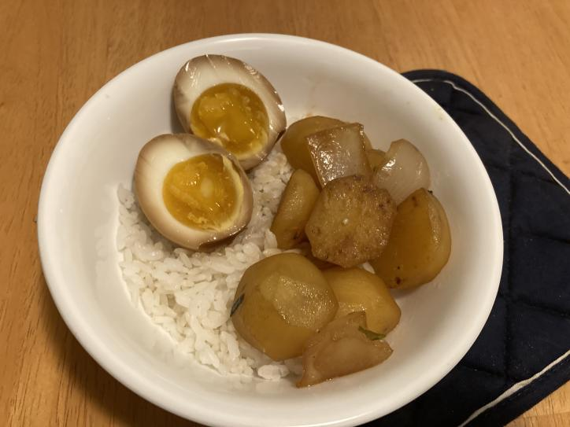

i love to eat and cook! i've been trying to cook more in college, so here are some recipes i'm perfecting and cooking!

Pork Rib Soup

- 1 chinese radish
- 2 lb of pork spare ribs
- 1 carrot
- ginger root
- 1 yellow onion
- green onion
- white pepper and salt to taste
- start by blanching the pork ribs with 2-4 slices of ginger and 1 ring of yellow onion for 10 minutes.
- meanwhile, cut carrot and radish into large chunks of similar size. dice the remaining yellow onion and slice the ginger.
- transfer the meat only into another boiling pot of water. dispose of the water the meat cooked in previously. this is to cleanse the meat of the blood.
- add diced yellow onion and ginger. lower heat to a low boil and allow meat to cook for 30 minutes.
- after 30 minutes, add vegetables and lower heat to a simmer. allow to simmer for 1.5-2 hours.
- season with white pepper and salt to taste. garnish with green onions and enjoy!
Shrimp and Napa

- shrimp
- napa cabbage
- 1 egg
- ginger root
- 1 clove garlic
- green onion
- white rice (optional)
- start by putting the white rice into your rice cooker and turning it on.
- meanwhile, defrost your shrimp and chop up your napa cabbage. mince your garlic and ginger.
- add ginger and garlic and oil to a wok. cook until fragrant, then add the shrimp and napa. once the shrimp starts turning pink, stir fry an egg into the mixture.
- season with salt and pepper to taste. top with green onions and serve on rice. enjoy!
Soft Boiled Soy Eggs
- eggs
- soy sauce
- water
- sugar
- onion
- chinese five spice
- 1 clove garlic
- sesame oil
- sesame seeds
- fill a pan just until the water goes up about an inch. boil your eggs in this with the cover on for 6-8 minutes. you can add vinegar if you would like, since it helps with peeling.
- take the eggs out and leave them in cold water.
- to make the marinade, use a 1:1 ratio of soysauce and water. add chopped onions and minced garlic. add 2 tablespoons of sugar, a splash of sesame oil, and chinese five spice to taste. sprinkle with sesame seeds.
- peel your eggs carefully and submerge them in the marinade. soak overnight, then enjoy!